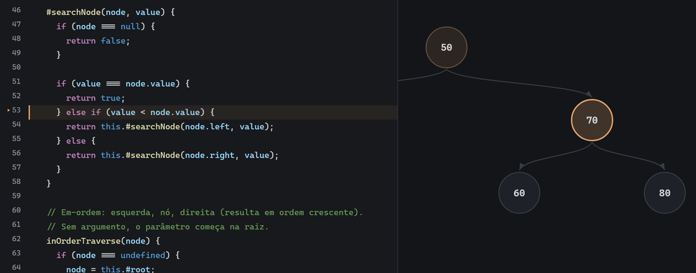

Entenda a estrutura vendo o seu código rodar.
Array, pilha, fila, lista ou árvore: escreva em JavaScript e veja cada linha, ponteiro e mudança no desenho. O ED Viz interpreta o seu código — não reproduz uma animação pronta.
Sem instalação e sem conta. 5 estruturas · 16 exemplos executáveis

No nó 70: 99 > 70 — a busca segue para a direita.
passo 121/370Como funciona
ler → ver → escreverLeia o conceito
O guia explica a estrutura, o custo das operações e os erros comuns — sem pular direto para o código.
Veja no passo a passo
Abra um exemplo e acompanhe a linha em execução, os ponteiros e o desenho mudando juntos.
Escreva o seu
Troque o exemplo pelo seu código, execute e veja onde ele para. O erro aparece na linha certa.
Um passo, por dentro
exemplo · pilha-array.jsA miniatura usa o exemplo da pilha: a linha acesa, o topo mudando e a explicação andam juntos. Na ferramenta, isso acontece com o seu código — e você pode pausar, voltar e inspecionar.
Abrir o exemplo da pilhaPush e pop em 6 linhas · o mesmo exemplo do guia
Estruturas
5 estruturas- 01 Array comece aqui Posições indexadas em memória contígua. Acesso O(1); inserir no meio desloca os vizinhos.
- 02 Pilha LIFO: o último que entra é o primeiro que sai. Tudo acontece no topo.
- 03 Fila FIFO: entra no fim, sai da frente. Com índices, a janela viva evita o shift.
- 04 Lista encadeada Nós ligados por referências. Inserir no início é O(1); chegar ao meio exige caminhar.
- 05 Árvore binária Até dois filhos por nó. Na BST, a comparação descarta um lado inteiro do caminho.
Por que não é só uma animação
Interpretador próprio
O código roda em um subconjunto didático de JavaScript, com mensagens de erro em português e limites de laço e recursão.
Histórico completo antes do desenho
O passo a passo é gravado de verdade. Voltar, avançar, dar zoom ou redimensionar nunca mudam o que aconteceu.
Serve à sala e ao estudo
Playback por teclado, zoom e pan para projetar; o código do aluno fica no navegador, por aba.
Já sabe o que quer testar? Abra o visualizador e rode o seu código.
Escrever meu código